이 글은 전체 2편 중 2편입니다. 긴 영상을 주제 흐름에 맞춰 나누어 정리했습니다.
이 글은 전체 2편 중 2편입니다.
채널: work view | 길이: 36:49 | 날짜: 20260611
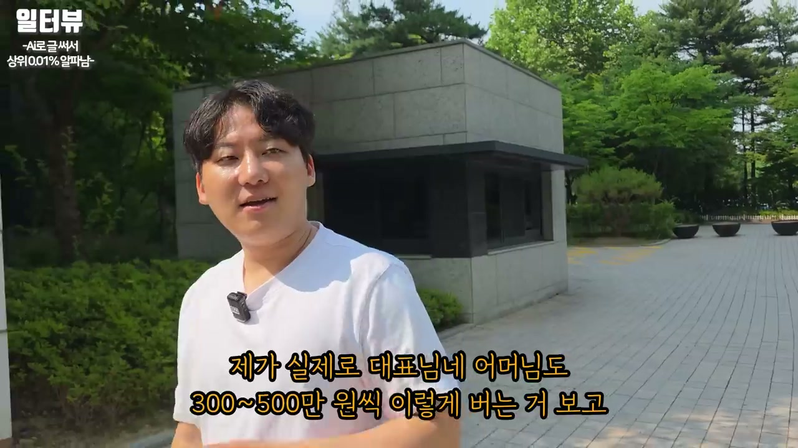
이 파트는 “안 된다”, “끝물이다”라는 말에 휘둘리지 말라는 메시지로 시작한다. 발화자는 자신이 보기에는 실제 사업가들이 오히려 “된다”고 말하는 경우가 많고, 사업하는 사람 중에 계속 “안 된다”고만 하는 사람은 잘 보지 못했다고 말한다. 이 말은 단순한 낙관론이라기보다, 해보지도 않고 시장을 닫아버리는 태도를 경계하는 의미다. 특히 여기서 다루는 온라인 글쓰기·블로그·AI 활용 모델은 오프라인 창업처럼 큰 임대료와 인건비를 먼저 태우는 구조가 아니므로, “진짜 해봐서 잃을 게 없다”는 식으로 접근하라고 권한다.
그는 해외에서는 시니어들이 많이 하는 부업으로도 언급된다고 말하며, 국내의 중장년층과 은퇴자에게도 맞을 수 있다고 본다. 다만 시니어가 “무엇으로든” 돈을 벌 수 있다는 뜻은 아니라고 분명히 한다. 돈을 벌려면 작업 방식이 단순하고, 초기 비용이 낮고, 실패해도 손실이 제한적이어야 한다. 그래서 그는 온라인 검색 수요를 잡는 블로그 모델을 시니어에게 특히 적합한 방식으로 본다.
발화자는 시니어가 메가커피 같은 카페를 차린다고 가정해 보라고 말한다. 카페를 열면 돈을 버는 것처럼 보이지만, 실제로는 알바를 써야 하고, 알바를 어떻게 관리할지 알아야 하며, 커피 매뉴얼도 익혀야 한다. 여기에 세금 정산, 재고, 매장 운영, 인력 관리까지 붙는다. 그는 이 모든 과정에서 사람 관리가 특히 어렵고, 사람을 잘못 쓰면 돈을 벌기는커녕 돈을 까먹을 확률이 높다고 본다.
반면 온라인 글쓰기 모델은 사람을 고용하지 않고도 시작할 수 있다. 글을 쓰고, AI로 썸네일을 만들고, 블로그에 올리고, 링크를 넣는 방식이므로 운영 리스크가 비교적 작다. 물론 무조건 돈이 된다는 뜻은 아니지만, 최소한 오프라인 매장처럼 큰 고정비와 인력 문제를 떠안는 구조는 아니라는 것이다. 그래서 그는 카페 창업보다 이 방식이 시니어에게 더 낫다고 주장한다.
발화자는 자신의 어머니가 이 방식으로 올해 300만~500만 원 수준의 수익을 내는 모습을 보며 검증감을 얻었다고 말한다. 그는 어머니에게 “돈 많이 번다”고만 이야기하지 말라고 했지만, 실제 수익이 발생했다는 점에서 이 모델이 시니어에게도 가능하다는 증거로 받아들인다. 여기서 중요한 것은 금액 그 자체보다 “시니어도 할 수 있다”는 실증이다. 그는 어른들이 이런 활동을 하면 단순히 돈을 버는 데서 그치지 않고, 활력을 얻고, 치매 예방에도 도움이 되며, 제2·제3의 인생을 사는 감각을 느낄 수 있다고 말한다.
시니어 입장에서는 만 원, 2만 원만 벌어도 기뻐할 수 있다고 한다. 이 말은 큰 부자가 되지 못하더라도 작은 수익 자체가 삶의 동력이 될 수 있다는 관점이다. 또한 이 모델은 돈을 까먹을 가능성이 낮다는 점에서 심리적 부담도 적다. 발화자는 예전에는 애드센스만 있었다면 시니어에게 어려울 수 있었지만, 지금은 네이버가 돈을 많이 주고 있고, 네이버 블로그부터 시작하면 왜 자신이 이렇게 말하는지 느낄 수 있다고 한다.
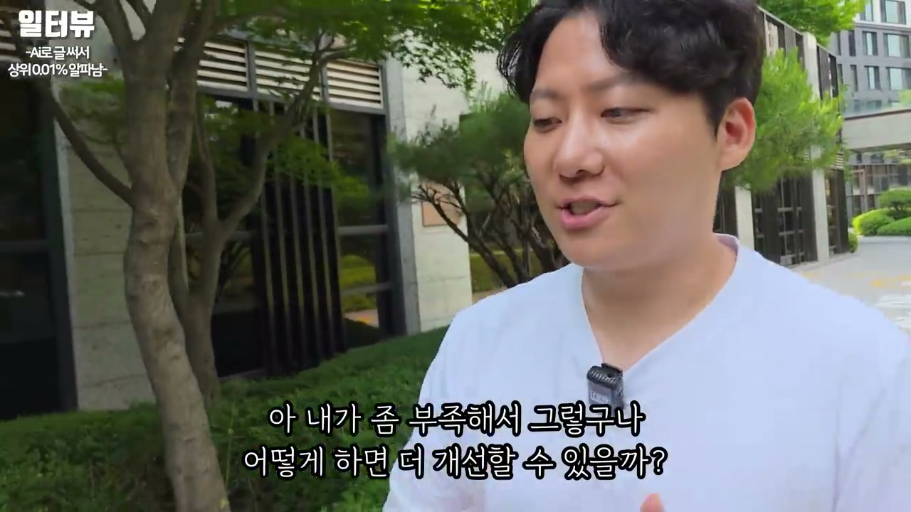
발화자는 모든 일을 자기 탓으로 받아들이면 오히려 마음이 편하다고 말한다. 남 탓을 하지 않으면 바꿀 수 있는 영역이 생기기 때문이다. 예를 들어 알바가 일을 못하거나, 악성 직원이 있거나, 누군가를 잘못 뽑았더라도 결국 그 사람을 제대로 알아보지 못하고 뽑은 책임은 자신에게 있다고 본다. 이 관점은 단순한 자기비난이 아니라 개선 가능성을 확보하는 방법으로 제시된다.
그는 실패하는 사람들의 공통점으로 계속 남 탓을 하는 태도를 든다. 애드센스나 애드포스트 승인이 안 되면 “이 사람이 잘못 알려줬다”고 하고, 조회수가 떨어지면 “네이버 탓이다”, “알고리즘 때문이다”라고 말한다는 것이다. 하지만 그는 항상 내 탓을 한다고 말한다. 그래야 “내가 부족해서 그렇구나, 어떻게 하면 더 개선할 수 있을까?”라는 질문으로 넘어갈 수 있고, 그래서 실패도 실패로만 보지 않게 된다고 설명한다.
발화자는 30대 초반에 이미 경제적 자유를 얻었다는 질문을 받는다. 진행자는 죽을 때까지 걱정하지 않아도 될 정도의 금액이 아닌지 묻고, 앞으로 더 발전하려는 힘이 어디서 나오는지 궁금해한다. 이에 대해 발화자는 “환경”이라고 답한다. 주변에 더 크게 버는 사람, 돈을 크게 벌지는 않아도 꿈이 큰 사람, 긍정적인 사람이 많기 때문에 자연스럽게 더 움직이게 된다는 것이다.
그는 주변 사람들이 “내일 뭐 할까”, “더 재미있는 게 없을까” 같은 이야기를 서로 한다고 말한다. 이런 대화가 반복되면 목표와 상상력이 커지고, 자기 기준도 바뀐다. 그는 일론 머스크, 이재용, 젠슨 황 같은 사람들이 이미 세계적인 부자임에도 여전히 열심히 일하는 모습을 보며 영감을 받는다고 한다. 그런 사람들을 보면 “저 사람들도 저렇게 열심히 사는데 내가 뭐라고 멈추나”라는 생각이 든다는 것이다.
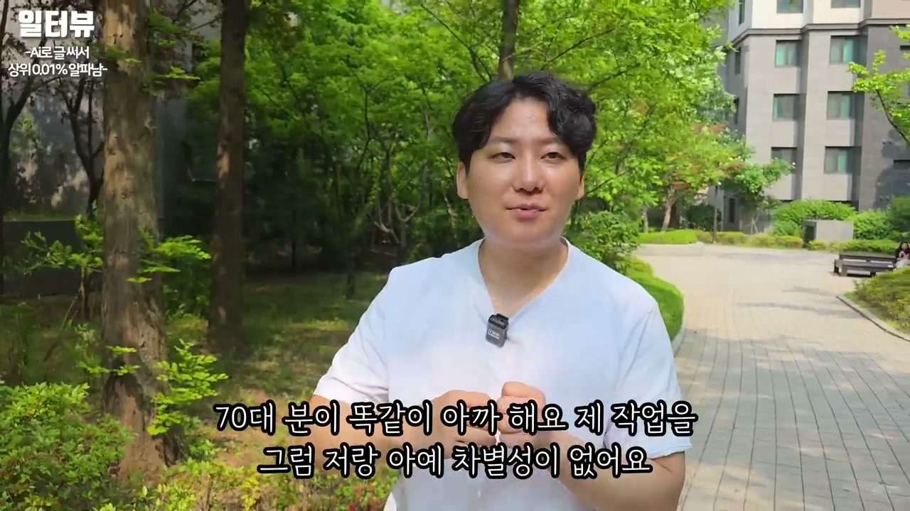
발화자는 은퇴자나 부업을 꿈꾸는 사람, 월 100만 원만 더 벌어도 삶이 나아질 것 같은 사람에게 조언을 한다. 과거에는 돈을 버는 일이 대부분 육체를 써서 돈과 교환하는 방식에 가까웠다고 말한다. 자신도 예전에는 그런 식이었다고 한다. 하지만 온라인 시대가 되었고, 여기에 AI가 들어오면서 상황이 달라졌다고 본다.
그는 솔직히 AI가 없으면 시니어가 이런 작업을 하기 어렵다고 말한다. 그러나 AI가 나오면서 격차가 거의 없어졌다고 주장한다. 70대도 자신이 하는 작업을 똑같이 할 수 있다면, 자신과 시니어 사이의 작업 차별성이 크게 줄어든다는 뜻이다. 처음에는 어렵고 머리가 아플 수 있지만, 하지 않으면 다른 방법으로 돈 벌기도 어렵다고 보기 때문에 도전해 보라고 말한다.
발화자는 구글이 세계적인 기업이고, 돈을 떼먹을 일이 없으며, 리스크가 낮은 평생 직업처럼 볼 수 있다고 말한다. 또 네이버가 AI 인용이 될수록 돈을 주겠다고 발표했다고 말하고, 구글도 결국 비슷하게 할 것이라고 예상한다. AI 시대가 되어도 누군가는 콘텐츠 생산자에게 돈을 줘야 하므로, 지금 시작하면 조금 앞서갈 수 있다는 논리다. 그는 “지금 꼭 도전해 보라”고 반복한다.
다만 이 파트에서 중요한 점은 “승인”과 “수익화”를 나눠서 설명한다는 것이다. 시간이 많지 않기 때문에 승인 관련 내용은 전자책으로 주겠다고 하고, 영상에서는 돈을 어떻게 버는지의 메커니즘을 간략하게 보여주겠다고 한다. 즉 승인용 글 작성, 블로그 개선, 승인을 받는 절차는 별도 단계이고, 승인이 된 후에는 키워드와 제목, 글 발행, 링크 설계로 넘어간다. 이 구조가 후반부 실습의 뼈대가 된다.
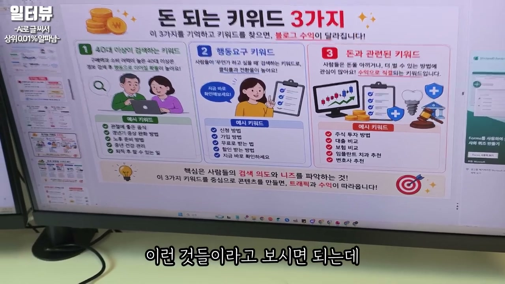
발화자가 정리한 키워드 전략은 세 가지다. 첫째는 40대 이상이 검색하는 키워드다. 건강에 좋은 음식, 갱년기 증상 완화, 노후 준비, 건강 관리처럼 중장년층이 실제로 궁금해하는 주제가 여기에 들어간다. 그는 특히 시니어와 중장년층은 검색 니즈가 명확하고, 드라마·건강·지원금·생활 정보처럼 반복 수요가 있는 키워드를 많이 찾는다고 본다.
둘째는 행동 요구 키워드다. “신청 방법”, “가입 방법”, “무료로 받는 법”, “확인받는 방법”, “지금 바로 확인하세요”처럼 검색자가 곧바로 행동하려는 키워드다. 예를 들어 정부지원금이 나오면 사람들은 대부분 검색하고, 신청 방법이나 자격 확인 방법을 찾는다. 이런 검색어는 단순 정보보다 클릭과 행동으로 이어질 가능성이 높기 때문에 수익화에 유리하다고 설명한다.
셋째는 돈과 관련된 키워드다. 주식 투자 방법, 대출 비교, 보험 비교, 임플란트 치과 추천, 변호사 추천 같은 키워드가 언급된다. 이런 키워드는 광고 단가나 전환 가능성이 높을 수 있기 때문에 중요하게 다뤄진다. 발화자의 관점에서 핵심은 키워드 자체가 아니라, 사람들이 왜 검색하는지, 어떤 문제를 해결하려고 하는지를 읽는 것이다.
발화자는 어른들이 많이 보는 드라마를 예로 들며, “붉은 진주”, “사랑을 처방해 드립니다” 같은 콘텐츠를 언급한다. 자신은 이런 드라마가 뭔지 잘 모르지만, 사람들이 “드라마 내용 51회 줄거리”처럼 많이 검색한다고 말한다. 검색 결과에 들어가면 애드센스가 붙어 있고, 이 자체가 돈 버는 구조라고 설명한다. 즉 자신이 콘텐츠를 좋아하느냐보다, 사람들이 실제로 검색하느냐가 중요하다는 것이다.
트로트 키워드도 같은 맥락이다. “미스터트롯”, “미스트롯4 투표하기”, “투표 참여 방법” 같은 검색어는 사람들이 직접 행동하려는 키워드다. 그는 예전에 “투표하기” 키워드 하나로 거의 1,000만 원 가까이 벌었다고 말한다. 트로트가 잘되면 관련 키워드도 계속 생기고, 사람들은 “어떻게 투표하나”, “바로 가기 어디 있나”를 찾기 때문에 글과 버튼, 링크 설계가 수익으로 이어진다는 설명이다.
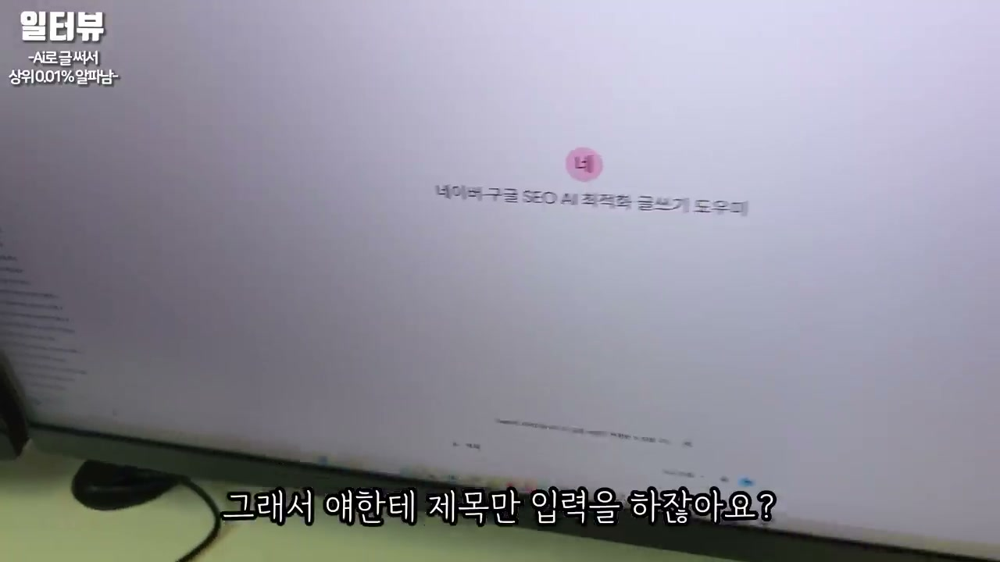
발화자는 자신이 만든 여러 AI 비서를 보여준다. 승인용 글을 위한 비서, 네이버·구글용 글 작성 비서, 지식인, 스레드, 네이버 카드뉴스, 여행 블로그, 쿠팡 파트너스, 유튜브 전환 등 각각 목적에 맞게 만들어 두었다고 말한다. 진행자는 “달러를 쓸어담게 해주는 비서 같다”고 반응한다. 발화자는 글을 쓰는 데 시간이 걸리기 때문에, 시간을 얼마나 절약해서 효율적으로 돈을 버느냐가 중요하다고 설명한다.
그는 제목만 입력하면 AI가 알아서 글을 써준다고 보여준다. 이 글은 구글 SEO, 즉 검색 상위 노출에 유리하도록 만들어 놓은 것이라고 말한다. SEO가 무엇이냐는 질문에는, 구글이나 네이버에 글이 노출되어야 돈을 버는 것이고, 매장을 차린다고 돈을 버는 게 아니라 사람들이 들어와야 돈을 버는 것과 같다고 설명한다. SEO는 100% 상위 노출을 보장하는 마법이 아니라, 노출 확률을 높이는 방법이며, 100% 상위 노출을 보장한다고 말하는 사람은 사기꾼으로 보면 된다고 선을 긋는다.
발화자는 초보자는 블로그스팟을 검색해서 블로그를 만들면 된다고 말한다. 새 글을 누르고, AI가 써준 내용을 그대로 복사해 붙여 넣으면 된다고 설명한다. 예전에는 이런 글을 직접 쓰는 데 10시간이 걸렸다면, 지금은 한 시간 수준으로 줄어들었다고 말한다. 더 빠르게는 제목만 넣어 글이 나오고, 그 글을 블로그스팟에 넣어 발행하는 방식이다.
이 단계에서 중요한 것은 블로그스팟이 구글 기반 수익, 즉 달러를 받는 축이라는 점이다. 발화자는 글 하나를 발행한 뒤 “첫 번째 작업이 끝난 것”이라고 말한다. 블로그스팟에 쓴 글에서 달러를 받고, 이후 네이버 블로그로 옮겨 원화 수익까지 노리는 구조다. 그래서 같은 콘텐츠를 하나의 플랫폼에만 머물게 하지 않고, 여러 수익 경로로 재활용한다.
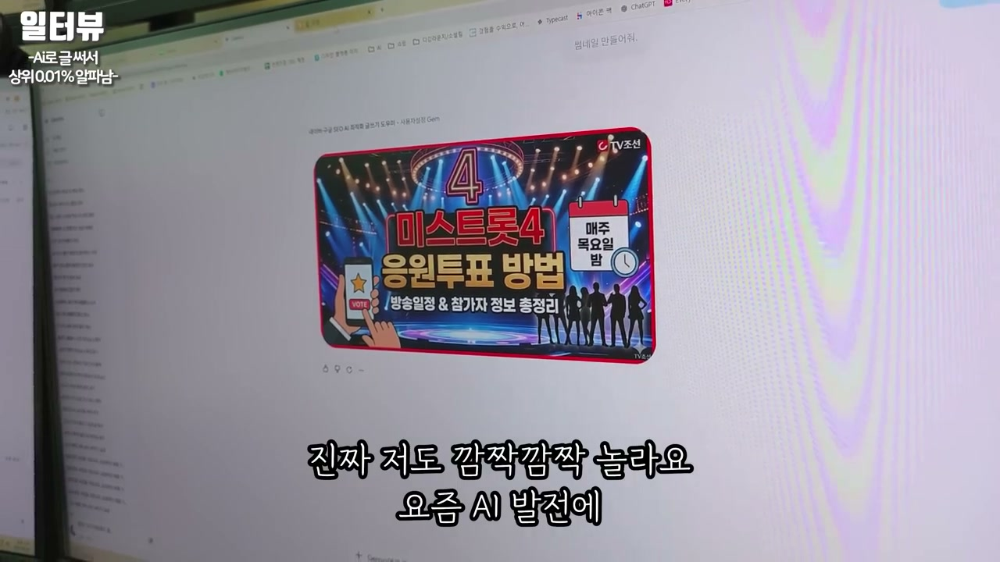
발화자는 AI에게 썸네일을 만들게 한다. 요즘 AI 발전이 놀라울 정도라며, 예전에는 한글이 깨지고 결과물이 어색했지만 지금은 기가 막히게 나온다고 말한다. 썸네일이 생성되는 동안 그는 다른 글을 네이버에 올리는 등 대기 시간을 활용한다. 과거에는 이런 썸네일 하나를 디자이너에게 맡기려면 2만~3만 원을 줘야 했지만, 이제는 AI로 빠르게 만들 수 있다고 설명한다.
글 발행 과정에서는 이미지 크기를 “매우 크게” 누르고, 실제 투표 링크를 넣은 버튼을 추가한다. 예를 들어 “리스타트로 투표하러 바로 가기”처럼 사람들이 많이 본 CTA 버튼을 넣는다. 적용을 누르고 게시하면 글 하나가 완성된다. 이때 버튼과 링크는 단순 장식이 아니라 사용자의 행동을 유도하고, 수익 구조로 연결하는 핵심 장치다.
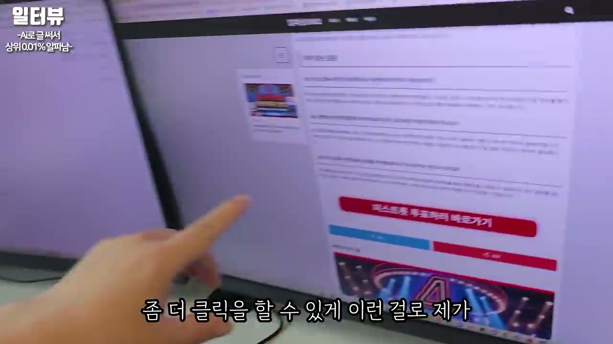
발행된 블로그 글은 처음에는 밋밋하게 보인다. 발화자는 그래서 자신이 개발한 일종의 “인테리어”가 있다고 말한다. 음식점이나 매장도 인테리어가 허름하면 잘 가지 않듯, 블로그도 글만 덩그러니 있으면 클릭과 체류가 약해질 수 있다는 논리다. 그는 테마를 누르고 특정 파일을 적용하면 목차, 버튼, 관련 영역 등이 생기고 더 그럴싸한 블로그가 된다고 설명한다.
중요한 것은 예쁘게 꾸민다고 돈을 버는 것은 아니라는 단서다. 디자인은 수익의 본질이 아니지만, 필요할 수 있으므로 제공할 수 있다고 말한다. 블로그 인테리어의 목적은 사용자가 내 블로그 안에서 계속 움직이게 만드는 것이다. 언론사 사이트처럼 오른쪽 관련 글, 중간 버튼, 하단 추천 링크 등을 넣어 빠져나가지 않고 계속 클릭하게 하는 설계가 핵심이다.
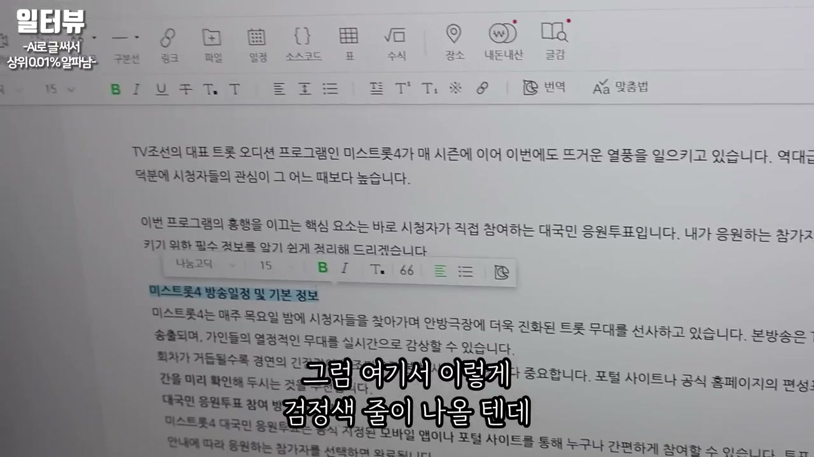
블로그스팟에 쓴 글은 달러 수익을 위한 글이고, 네이버 블로그로 옮기면 원화 수익을 기대할 수 있다. 하지만 같은 글을 그대로 복사해 네이버에 올리면 포털이 싫어할 수 있으므로 변환을 거쳐야 한다고 설명한다. 그는 “요약보이” 같은 도구에 글을 넣어 아까 글과 조금 다르게 바꾼 뒤 네이버에 올리라고 한다. 네이버용 제목도 따로 추천받고, 네이버 블로그에 맞게 본문을 넣는다.
발화자는 AI 시대에 인간이 하는 일은 결국 가독성 정리라고 말한다. AI가 글을 쓰고, 제목을 추천하고, 요약을 변환하면, 사람은 그것을 복사해 붙이고 보기 좋게 다듬는다. 네이버 블로그에 글을 넣은 뒤 검은색 인용구 같은 서식을 넣으면 깔끔해진다고 보여준다. 그는 자신은 많이 해봐서 빠르지만, 시청자는 느리게 보면서 따라 하면 된다고 말한다.
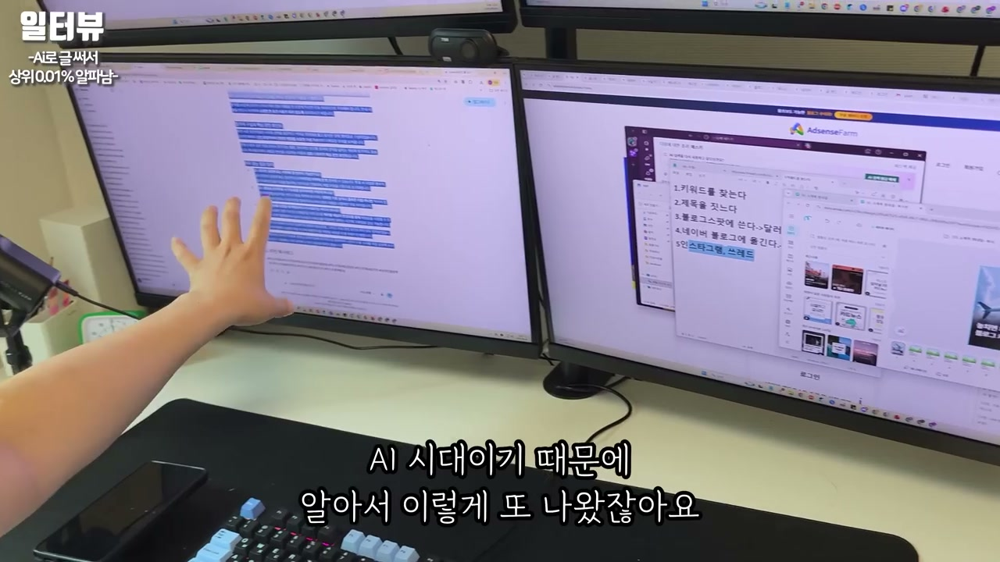
발화자는 구글에 올린 글, 네이버에 변환해 올린 글을 다시 인스타그램과 스레드에도 올린다고 말한다. 가장 핫한 키워드를 찾고, Gemini 같은 AI에게 글을 써달라고 하고, 그것을 구글과 네이버에 올린 다음, 다시 인스타그램·스레드용으로 바꿔 활용하는 흐름이다. 카드뉴스 제작 비서에 기존 글을 넣으면 카드뉴스가 자동으로 나오고, 사진이 걱정되면 AI에게 사진 다섯 장을 만들어 달라고 하면 된다고 한다. 이미지가 생성되는 동안 사람은 다른 글을 채우면 된다.
이 작업은 결국 여러 플랫폼에서 유입을 만들고, 최종적으로 내 블로그로 보내는 구조다. 인스타그램 카드뉴스 옆에도 광고가 붙고, 스레드와 인스타그램에서 관심을 얻으면 다시 블로그 유입으로 연결할 수 있다. 발화자는 인스타그램은 감성이 있으므로 감성을 살려 넣어야 한다고 덧붙인다. 그래도 기본 골격은 AI가 만든 글과 이미지, 그리고 사람이 붙여 넣고 정리하는 반복 작업이다.
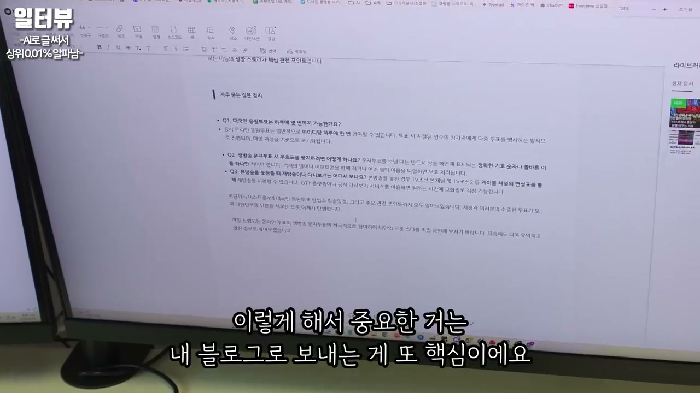
후반부에서 진행자는 카카오톡까지 연결하면 좋지 않냐고 묻는다. 발화자는 그 부분은 담당자에게 혼나기 때문에 자세히 알려줄 수 없다고 말한다. 자신도 먹고 살아야 하니 전부 공개할 수는 없다고 하며, 단톡방 링크를 달아 시청자에게만 몰래 알려주자는 농담성 흐름도 나온다. 한국 사람 5천만 명이 카카오톡을 쓴다는 식의 언급도 나오며, 카카오톡이 유통 채널로 얼마나 큰지 강조된다.
이 장면은 전체 시스템이 블로그와 인스타그램에서 끝나지 않고, 메신저 기반 확산까지 염두에 두고 있음을 보여준다. 다만 발화자는 카카오톡 관련 구체적 방법은 공개하지 않는다. 대신 초보자는 지금까지 보여준 블로그스팟, 네이버, 인스타그램, 스레드, 카드뉴스 정도만 해도 충분히 큰 의미가 있다고 말한다. 그는 이 내용을 다른 사람들은 키워드 강의, 블로그스팟 강의, 네이버 블로그 강의, 인스타그램 카드뉴스 강의, 스레드 강의로 각각 200만~300만 원씩 쪼개 판다고 주장한다.
발화자는 글 1,000개도 발행 가능하다고 말한다. 하지만 그 말이 곧 “100만 원 넣으면 자동으로 된다”는 뜻은 아니라고 분명히 한다. 자동화에는 맹점이 많고, AI가 글을 써주는 데도 돈이 든다. 많이 돌릴수록 비용이 커지며, 수동으로 돈을 벌어보지도 않고 자동화를 돌리면 돈을 못 번다고 경고한다.
그의 순서는 명확하다. 먼저 수동으로 돈이 되는 키워드와 글 구조를 검증해야 한다. 수동으로 돈을 벌어본 뒤, 나중에 자동화에 대한 꿈이 있으면 그때 자동화로 넘어가야 한다. 자동화는 무료가 아니며, 돈 되는 구조를 모른 채 돌리는 자동화는 오히려 손실을 키울 수 있다는 메시지다.
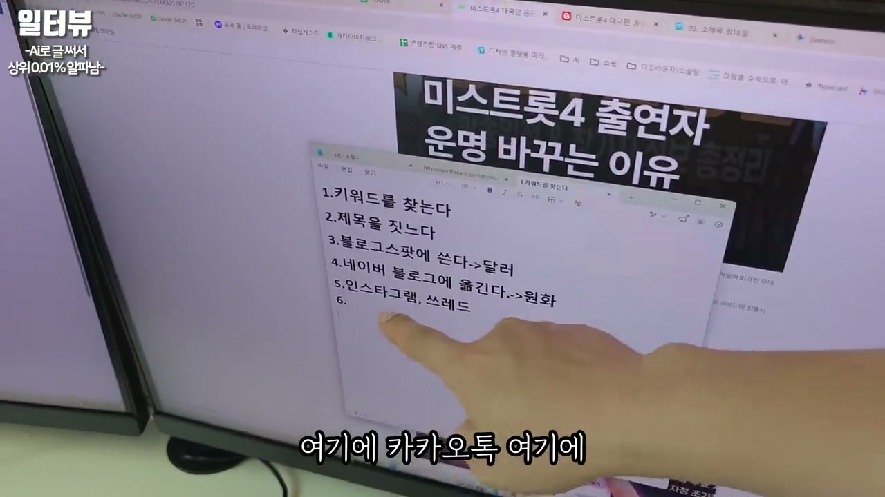
발화자는 자신이 운영하는 인스타그램 계정이 40개가 넘는다고 말한다. 그 계정을 매일 수동으로 확인할 수 없기 때문에 리포트와 자동화 도구를 이용해 관리한다고 설명한다. 어떤 계정의 팔로워가 올랐는지, 어떤 계정이 떨어졌는지, 발행 게시물이 얼마나 됐는지, 도달수가 어떻게 변했는지 같은 지표를 보며 전략을 짠다. 영상 속 대시보드에서는 수천만 단위의 도달 또는 조회 지표와 여러 계정별 수치가 제시된다.
하지만 그는 양이 많다고 곧바로 돈이 되는 것은 아니라고 다시 강조한다. 돈이 되는 계정도 있고, 돈이 안 되는 계정도 있으며, 실패한 계정이 훨씬 많다고 말한다. 인스타그램 정지도 요즘 매우 심하고, 블로그도 정지를 많이 당해봤다고 한다. 네이버 블로그는 1인당 세 개까지 가능해서 가족 계정까지 썼다가 정지 경험을 쌓았고, 그 과정에서 어떻게 안정적으로 운영할지 배웠다고 설명한다.
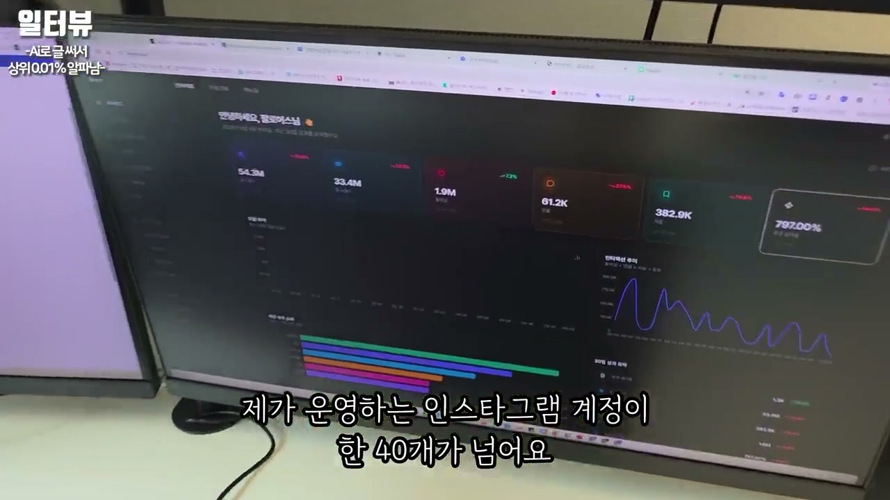
발화자는 돈이 쌓인 구조를 설명하면서 실제 소비와 자산 운용 이야기를 꺼낸다. 그는 이사를 오면서 5억을 현금으로 냈고, 2년치 월세도 한 번에 냈다고 말한다. 집주인이 좋아했다는 말과 함께 7,200만 원 정도의 금액도 언급된다. 그는 부채감이 자신의 뇌에는 손실처럼 느껴져서, 차도 현금으로 사고, 가능한 한 빚을 지지 않는 방식을 선호한다고 말한다.
또한 원래는 현금을 많이 가지고 있었는데, 유튜브 출연 이후 사람들이 돈을 굴리라고 조언해 주었다고 한다. 그래서 10억을 6개월짜리 예금에 넣었더니 1,500만 원을 받는 경험을 했고, 그전까지는 돈을 통장에만 넣어 두었다는 사실을 깨달았다고 말한다. 은행 지점장이 추천해 준 방식으로 5억 넘게 벌어준 것 같다고도 언급한다. 구글 주식도 몇 개 샀고, 그것으로 2억 3천만 원 정도 벌었다고 말하며, 구글이 최고라고 표현한다.
후반부에서 진행자는 주식 총액이 얼마인지 묻는다. 발화자는 구글 투자가 10억으로 시작해서 16억 정도가 되었다고 말한다. 앞서 보여준 70억은 전체 자산이며, 예금·적금 같은 항목도 포함되어 있다고 설명한다. 예금만 10억 정도 들어가 있다고 말하며, 현금과 투자, 사업 수익이 섞여 있는 구조임을 보여준다.
그는 자신의 주변에는 자신보다 훨씬 돈이 많은 사람이 많기 때문에, 자신이 그렇게 많다고 생각하지 않는다고 말한다. 특히 한 사람이 회사를 팔았고, 그 사람의 통장이나 캡처에는 100억, 1,200억 수준의 금액이 있었다고 언급한다. 1989년생이라고 하며, 30대에 그런 규모를 만들었다는 이야기도 나온다. 이 사례는 단순한 자랑보다 “환경이 기준을 바꾼다”는 결론으로 연결된다.
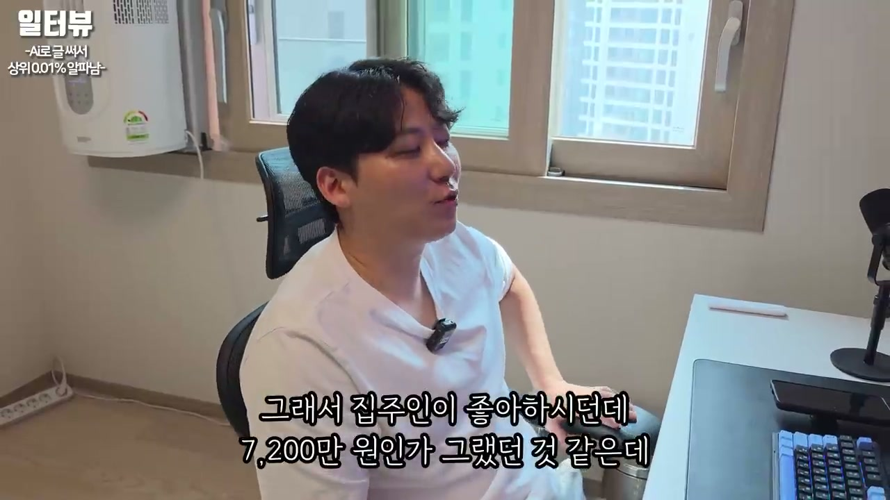
발화자는 자신이 안산에서만 사업을 했다면 이렇게까지 하지 않았을 것 같다고 말한다. 주변에 몇백억, 몇천억 규모를 다루는 사람들이 있었기 때문에 “저런 시장이 있구나”를 알게 되었고, 많이 배우면서 꿈도 커졌다는 것이다. 그는 사업은 대표가 그리는 꿈까지만 크고, 절대 그 이상으로 커지지 않는다고 말한다. 대표가 하고 싶은 생각과 목표가 있어야 사업도 그만큼 확장된다는 뜻이다.
그래서 그는 목표를 조금 높게 잡으라고 말한다. 자신의 애드센스 목표도 애초에 순수익 100억 원, 그것도 1년에 100억이었다고 한다. 만약 목표를 1,000만 원으로 잡았다면, 1,000만 원을 벌고 만족하며 살았을 것 같다고 말한다. 하지만 처음부터 목표가 높았기 때문에 “1,000만 원밖에 안 됐네, 어떻게 더 높일 수 있지?”라고 계속 연구하게 되었고, 그 과정에서 더 큰 회사와 사람들을 만나며 경제적 기회를 얻었다고 정리한다.
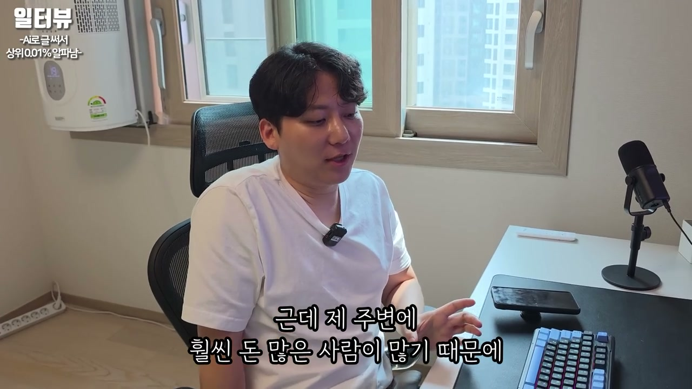
“안 된다고 해서 안 하는 게 아니라, 되는 사람들은 다 된다고 해요.”
“메가커피를 차린다고 돈 버는 거 아니잖아. 알바 써야지, 매뉴얼 알아야지, 세금 정산해야지.”
“모든 일을 내 탓으로 하면 진짜 편해요. 그래야 내가 개선을 하죠.”
“실패도 다 실패라 생각 안 해요. 예방 주사를 맞았다고 봐요.”
“그런 힘들은 환경인 것 같아요.”
“AI가 나오면서 격차가 아예 없어졌어요. 70대 분이 똑같이 제 작업을 해요.”
“블로그를 개선한 다음에 승인용 글을 작성하고 승인을 받는다. 이게 끝이에요.”
“키워드를 찾아요. 제목을 짓는다. 블로그스팟에 쓴다. 네이버 블로그에 옮긴다.”
“내가 글 쓴다고 100% 상위 노출된다고 하면 사기꾼이라고 보시면 돼요.”
“AI 시대에서 인간이 하는 거는 가독성 정리밖에 없어요.”
“글은 1,000개도 발행 가능하죠. 그런데 양으로 한다고 돈이 되는 건 아니에요.”
“자동화가 공짜도 아니에요. 수동으로 돈을 벌어봐야 돼요.”
“사업은 대표가 그리는 꿈까지밖에 안 커요.”
“애드센스 할 때 순수익 100억이 목표였어요. 1년에.”
이 파트의 핵심은 단순히 “AI로 글을 쓰면 돈을 번다”가 아니다. 발화자가 말하는 구조는 키워드 수요를 찾고, AI로 글과 이미지를 만들고, 블로그스팟·네이버·인스타그램·스레드로 재가공해 배포하며, 최종적으로 내 블로그에 트래픽을 모으는 시스템이다. 블로그스팟은 달러 수익, 네이버는 원화 수익, 인스타그램과 스레드는 유입 확장, 카드뉴스와 썸네일은 클릭과 체류를 돕는 장치로 배치된다. 여기에 버튼, 목차, 내부 링크, 관련 글, CTA를 넣어 사용자가 계속 움직이게 만드는 설계가 붙는다.
동시에 영상은 무조건적 성공담만 말하지 않는다. 100% 상위 노출을 보장하는 사람은 사기꾼이라고 하고, 자동화는 공짜가 아니며, AI 비용도 커지고, 양만 늘린다고 돈이 되지 않는다고 경고한다. 인스타그램 계정 정지, 블로그 정지, 돈이 안 되는 계정, 실패한 계정이 훨씬 많았다는 말도 나온다. 그래서 실전 순서는 먼저 수동으로 돈 되는 구조를 확인하고, 그 뒤에 자동화와 확장으로 넘어가는 것이다.
시니어와 초보자에게 주는 메시지는 “늦었다”가 아니라 “지금은 AI 때문에 격차가 줄었다”는 쪽에 가깝다. 예전에는 온라인 글쓰기, 썸네일 제작, SEO 글 작성, 플랫폼별 변환이 모두 부담스러웠지만, 지금은 AI가 그 상당 부분을 대신한다. 다만 사람이 해야 할 일은 여전히 남아 있다. 검색 의도를 파악하고, 키워드를 고르고, 가독성을 정리하고, 플랫폼별로 맞게 변환하고, 성과를 보고 개선하는 일이다.
마지막 메시지는 환경과 목표다. 발화자는 주변에 더 큰 돈을 버는 사람과 더 큰 꿈을 가진 사람들이 있었기 때문에 자신의 목표도 커졌다고 말한다. 사업은 대표가 그리는 꿈의 크기만큼 커지고, 작은 목표에 만족하면 그 지점에서 멈출 가능성이 높다는 것이다. 이 영상의 2/2 파트는 블로그 수익화 실습을 보여주면서도, 결국에는 실행 태도, 실패 해석, 환경 설정, 목표 크기, 반복 시스템이 현금흐름을 만든다는 메시지로 끝난다.
댓글
GitHub 이슈 기반 댓글 시스템입니다.